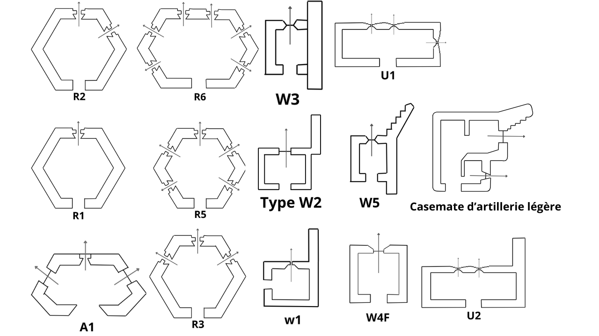

Le Secteur Défensif puis Secteur Fortifié de Lille (SFL) constitue l’un des dispositifs militaires les plus particuliers de la frontière du Nord durant la Seconde Guerre mondiale. S’étendant d’Armentières jusqu’au secteur de Rumegies et Maulde, il se situe entre le Secteur Fortifié des Flandres à l’ouest et le Secteur Fortifié de l’Escaut à l’est. Sa spécificité majeure réside dans le fait qu’il englobe entièrement l’immense agglomération industrielle de Lille, Roubaix et Tourcoing, ce qui complique considérablement l’organisation d’une défense cohérente et la construction d’ouvrages fortifiés.
Contrairement aux puissantes fortifications de la Ligne Maginot dans l’Est de la France, le SFL reste faiblement fortifié avant 1939. Entre 1937 et le début de la guerre, les Français mettent en place une ligne relativement légère de blockhaus de type « 1re Région Militaire ». Ces ouvrages sont implantés au plus près de la frontière belge, donc en avant de l’agglomération lilloise afin de tenter de contenir une éventuelle offensive ennemie avant qu’elle n’atteigne les zones urbaines.
Le système défensif français se compose d’environ une centaine de blockhaus répartis selon plusieurs lignes successives. Une première ligne simple relie Armentières à Halluin. Entre Halluin et Tourcoing, la défense est renforcée par deux lignes espacées d’environ 2,5 kilomètres, créant davantage de profondeur défensive. Plus au sud, autour de Roubaix et Villeneuve-d’Ascq, les positions alternent de nouveau entre lignes simples et doubles jusqu’à Rumegies. Ces dispositifs comprennent essentiellement des blockhaus d’infanterie, des abris de tir ainsi que plusieurs emplacements destinés à accueillir des tourelles démontables.
L’arrivée du British Expeditionary Force à l’automne 1939 modifie profondément l’organisation défensive du secteur. Entre septembre et octobre 1939, les troupes britanniques s’installent dans la région avec des effectifs considérables. Les ingénieurs britanniques, notamment les Royal Engineers, entreprennent alors la construction de plusieurs centaines de blockhaus supplémentaires selon leurs propres plans. Contrairement au modèle français fondé sur des lignes continues, les Britanniques privilégient une défense en profondeur organisée autour de « points d’appui » composés de petits groupes de fortifications pour armes automatiques et de positions antichars.
Les travaux britanniques visent à établir plusieurs lignes défensives successives : une première immédiatement derrière les positions françaises, une seconde à l’arrière de Lille afin de protéger la base du saillant formé par la ville vers la Belgique, puis une troisième le long des canaux de la Bassée, de la Haute-Deûle et de la Sensée. Cependant, les mauvaises conditions climatiques de l’hiver 1939-1940 ralentissent fortement les chantiers et seule la première ligne est réellement opérationnelle au moment de l’offensive allemande.
Le secteur conserve également des vestiges militaires plus anciens. Plusieurs blockhaus construits par l’armée allemande durant la Première Guerre mondiale, notamment dans le cadre de la ligne Hindenburg en 1916-1917, sont réutilisés et intégrés aux défenses modernes.
Sur le plan organisationnel, le commandement du secteur évolue à plusieurs reprises entre 1939 et 1940. Le colonel puis général Charles Bertschi et le général Victor Gillard dirigent successivement le secteur. Les troupes françaises permanentes y sont relativement limitées et reposent principalement sur le 16e Régiment Régional de Travailleurs, chargé autant des travaux de fortification que de certaines missions défensives ainsi que sur la 51ème DI remplacé par la suite par la BEF.
Après le déclenchement de la guerre en septembre 1939, le secteur passe du contrôle de la 1re Région Militaire à celui de la 1re Armée française. Le déploiement du corps expéditionnaire britannique transforme alors le Nord en une immense zone militaire alliée destinée à faire face à une offensive allemande passant par la Belgique.
La situation bascule brutalement en mai 1940. Après les percées allemandes de Sedan et de la Meuse menées par les forces blindées de Heinz Guderian et de Ewald von Kleist, les armées alliées du Nord se retrouvent progressivement encerclées. Le 20 mai 1940, les forces allemandes atteignent la Manche et enferment le 1er Groupe d'armées allié dans une vaste poche. Après la capitulation belge du 28 mai, Lille devient l’un des derniers points de résistance majeurs.
Les combats se déroulent autour de Cysoing, Wattrelos et Neuville en Ferrain. Les combats qui se déroulent sont des combats de ralentissements de l’armée allemande. Comme le repli des troupes britanniques est organisé, quel environ 1 blockhaus pour 20 est occupé ce qui ferra apparaître des failles dans le dispositif.
La célèbre Bataille de Lille se déroule du 25 au 31 mai 1940. Environ 40 000 soldats français et alliés, commandés par le général Jean-Baptiste Molinié, défendent la ville quartier par quartier face à des forces allemandes très supérieures en nombre. Les combats sont particulièrement violents à Loos, Haubourdin, Lambersart ou encore dans les quartiers des Postes et des Marches. Cette résistance héroïque permet de ralentir plusieurs divisions allemandes, dont trois divisions blindées, offrant ainsi un temps précieux à l’évacuation des troupes alliées à Dunkerque dans le cadre de l’Opération Dynamo.
À court de munitions et totalement encerclés, les défenseurs se rendent progressivement entre le 28 et le 31 mai. Le 1er juin 1940, les survivants reçoivent même les honneurs militaires de leurs adversaires sur la Grand-Place de Lille avant leur départ en captivité. Le Premier ministre britannique Winston Churchill rendra hommage au sacrifice des défenseurs lillois, conscient du rôle décisif qu’ils ont joué dans la réussite de l’évacuation de Dunkerque.
Le Secteur Fortifié de Lille est officiellement dissous le 5 juin 1940, peu après la chute de la poche de Dunkerque. Malgré ses fortifications modestes et inachevées, il demeure un symbole important de la résistance alliée lors de la campagne de France de 1940.
Pour plus d’informations sur le SFL :
https://lesblockhauslyssois.fr
Sources :
Les blockhaus lyssois

Schéma des blockhaus construits par la BEF.